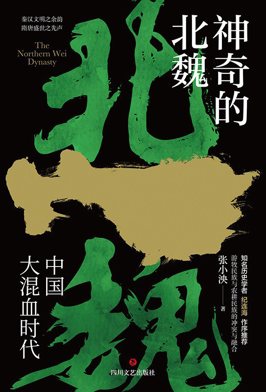

🔗
Home
1 拓跋鲜卑
[+]
南迁时代
拓跋力微
鲜卑王子
2 代国风云
[+]
雄风重振
封代立国
国生内乱
铁弗大患
风云突变
3 魏巍大国
[+]
危难之际
南征北战
魏燕争雄
帝国初兴
柴壁之战
同室操戈
仁君图治
南北交锋
4 北国统一
[+]
马踏柔然
扬鞭西北
策马辽东
北国一统
太武灭佛
崔浩疑案
两败俱伤
宫闱惨案
文治帝王
后宫天下
股耾之臣
励精图治
权臣乙浑
密定大策
太后临朝
心生间隙
禅让之争
献文之死
5 宏图大业
[+]
仁心帝王
太和改制
宏图大业
后宫失火
江左之憾
6 盛极而衰
[+]
致命弱点
祸临宗室
钟离之战
后妃当国
惊天之乱
7 天下布武
[+]
河阴之变
权臣当道（一）
权臣当道（二）

神奇的北魏
作者: 张小泱
1 拓跋鲜卑
南迁时代
司马迁：商汤流放夏桀，其子獯鬻【xun1 yu4】逃往北方，成为匈奴前身
黄帝子昌意分封小儿子到北方大漠，声称自己是轩辕后裔，土地之后。鲜卑语土发拓，后发跋，就以拓跋为姓氏。
更可信的史料：鲜卑人出自东胡（中国东北，西伯利亚通古斯）。后被蒙古高原崛起的匈奴战败分成两个部落：
乌桓（大兴安岭南段）
鲜卑（大兴安岭北段），曾一度在地域上分为三大部
东部（宇文部，慕容部和段部）
中部（拓跋部和分离出来的柔然部）
西部（土谷浑部，乞伏部和秃发部）
最初拓跋部被成为索头。索即辫子。东汉时，匈奴分为两部
南部：内附中原
北部：西迁
鲜卑部落离开东北山林，填补西部草原匈奴故地，与匈奴人通婚，繁衍出新一代鲜卑人，称“拓跋”，意为“鲜卑父，匈奴母”。
始均
帮助尧驱逐女魃【ba2】部族立下功勋
拓跋毛
统御36部，99大姓，兵强马壮，威震大漠
拓跋推寅
【yin2】
东汉中叶
见部族生存环境恶劣，率族南迁至大泽（内蒙大赉【lai4】湖）
想继续南迁，去世
拓跋邻
拓跋诘汾
继续迁徙，到达匈奴故地，水草肥美，生活安定
与“天女”生下拓跋力微
拓跋力微
拓跋力微
尊位拓跋始祖，不同常人，高深莫测
三件事
舍生让马没鹿回部首领纥【he2】豆陵宾，并迁都长川（内蒙古兴和县）
迁都图治
纥豆陵宾死后杀其妻（纥氏）及两子（速侯，回题）
收归没鹿回部
迁都盛乐（内蒙林格尔）
亲附中原（266年司马炎迫魏元帝禅让）
与曹魏联姻
派拓跋沙漠汗（子）做质子
鲜卑王子
拓跋沙漠汗（力微子）在西晋展现英杰之气，引起卫瓘【guan4】担心。
晋惠帝登基，沙漠汗归国。在宴会上被误以为引空弓射鸟是妖术，被酋长们打小报告。
拓跋力微偏爱幼子，同意酋长除掉拓跋沙漠汗。
2 代国风云
雄风重振
卫瓘买通拓跋鲜卑亲近的乌桓酋长库贤散布谣言拓跋力微因为拓跋沙漠汗的死要杀各酋长。酋长各自跑路导致拓跋鲜卑分崩离析。
拓跋力微不久离世。
拓跋悉鹿
（力微子）在位9年
拓跋绰
【chuo4】（力微次子）在位9年
拓跋弗
（沙漠汗子）在位1年
拓跋禄官
（力微子）在位1年
分拓跋鲜卑为三
东（自己），较平庸
中（拓跋沙漠汗子拓跋绮迤）
英杰魁岸
298年穿越漠北向西攻打诸胡，归附，实力大增
304年匈奴刘渊自立汉王反叛西晋，驰援大胜，被册封大单于
暴毙
西（拓跋沙漠汗子拓跋绮卢）
收归散落并州杂胡
西渡黄河击败匈奴，乌桓
确立与西晋国界
封代立国
拓跋绮卢
拓跋绮迤死后两年，拓跋禄官也去世
合并东，中，西三部
刘渊在左国城称帝（山西方山县南村），白部鲜卑侵扰并州。西晋并州刺史刘琨送儿子刘遵做质子请求拓跋绮卢出兵助战。
拓跋郁律（拓跋弗子）大败白部
封代国公
国生内乱
拓跋绮卢改革
盛乐定为北都
平城定为南都
新平城（平城南百里）由长子拓跋六修坐镇拱卫京师
内乱
拓跋绮卢开始暴虐，柔然部分离
拓跋绮卢偏爱幼子，拓跋六修反叛，父子开战，杀父，兄。
拓跋普根
（拓跋绮迤子）突袭拓跋六修，上位一月暴毙。子上位不久夭折。
拓跋绮迤妻惟氏临朝称制
拓跋郁律
在老臣拥立下上位
西击乌孙东胜忽吉
西晋八王之乱
惟氏政变杀害拓跋郁律及十几个部族首领
立子拓跋贺辱【人子旁】，一年暴毙
又立幼子拓跋纥那
后赵入侵代国，惟氏迁都大宁（内蒙赤峰市）
拓跋翳槐
，翳读【yi4】（拓跋郁律子）在父亲被害后逃到贺兰部
贺兰部头领贺兰蔼头（郁律舅舅），匈奴一支，后归附拓跋鲜卑，世代姻亲
惟氏请宇文部帮忙攻击贺兰部要拓跋翳槐，大败后和纥那逃离大宁
贺兰部立拓跋翳槐上位
与后赵修好，无子，派弟弟拓跋什翼键做质子
贺兰蔼头恃功生傲，被拓跋翳槐设计杀掉，引起国人怨声而迎立拓跋纥那
在后赵的帮助下迁都大宁并将拓跋纥那赶到了慕容部
迁都盛乐，后一年去世，遗命立拓跋什翼键
此时拓跋什翼键远在千里，顾命大臣梁盖担心宗室作乱，打算另立新君
拓跋屈（拓跋什翼键弟）：奸诈凶狠被杀
拓跋孤（拓跋什翼键弟）：有仁爱之心，被立，不受，亲迎拓跋什翼键
拓跋什翼键
19岁即位称王
改革官僚体系，四方归顺
打算模仿中原王朝建造高大都城未果
和亲慕容部（前燕），取慕容皝【huang4】妹，女
招募燕凤
铁弗大患
铁弗：匈奴父，鲜卑母，标榜大汉血统姓刘
刘虎在拓跋什翼键四年进攻代国，大败被杀
子刘务桓无野心与拓跋和亲
刘阏【yan1】陋头（刘务桓弟）挑事被降服
刘悉勿祈（刘务桓子）上位，次年死
刘卫辰（刘悉勿祈弟）杀刘悉勿祈子上位
示好代国和秦（苻坚）
攻秦被俘，引前秦攻代
风云突变
拓跋什翼键夫人贺兰氏生下
拓跋珪
太子拓跋寔【shi2】以身挡长孙斤刺杀而亡
刘卫辰引秦攻代，拓跋多次战败逃往阴山，高车叛，转而逃往漠南
之前拓跋什翼键即位后将国土一半分与拓跋孤，其子拓跋斤屡屡失职后收回领土，怀恨在心
挑拨拓跋什翼键庶长子拓跋寔君被拓跋斤挑拨而将兄弟全部杀害，并进入拓跋什翼键寝宫将父亲诛杀
代国盛乐被前秦攻破，苻坚杀拓跋寔君
3 魏巍大国
危难之际
苻坚欲带拓跋珪回长安，燕凤劝说苻坚将代国一分为二
独孤刘库仁（河东）
其母为拓跋郁律女儿
与铁弗部刘卫辰是宗亲，但是关系差劲
因受苻坚封赏招刘卫辰嫉恨而偷袭，大败刘卫辰（逃至阴山西北）
铁弗刘卫辰（河西）
燕凤安排拓跋珪随母贺兰氏逃至贺兰部。贺兰部首领是拓跋珪外公，但是舅舅们并部欢迎，于是辗转到独孤部。
慕容鲜卑在五胡十六国时期共建5各政权
前燕开国国君慕容皝
子慕容儁继位，称帝，立国号大燕，迁都邺城（原蓟）
子慕容暐继位，被苻坚擒获囚禁长安，前燕灭亡
慕容垂（慕容皝第五子）英勇善战，被慕容暐猜忌奔赴苻坚
受厚待而不忍杀苻坚
后交出兵权逃脱围攻苻坚之子于邺城
苻坚在淝水之战兵败东晋谢玄后
慕容暐设计谋杀苻坚失败被杀
慕容泓（慕容暐弟）准备称帝被燕国旧部杀死拥立慕容冲（慕容暐弟）称帝
苻坚受慕容冲攻击，逃出长安后被羌族首领姚苌【chang2】杀死
子苻丕即位，被慕容氏围剿，刘库仁出于对苻坚的君臣之名出兵对抗慕容部
刘库仁随军人员慕容文策反杀刘库仁
刘库仁弟刘眷继位，刘眷子刘罗辰劝说杀死刘库仁子刘显
刘显反叛杀刘眷父子自立为独孤部酋长
拓跋珪是代国继承人，刘显的君主。而刘显不能容忍拓跋珪在自己地盘凌驾于自己，密谋杀害拓跋珪，被亲信梁六眷泄露。
拓跋珪逃至贺兰部
贺兰讷【ne4】和贺兰染干想挟天子以令诸侯，拒绝交出外甥
得到贺兰部庇护，拓跋珪躲过危机，得到历练，15岁宣布重建代国，各部归顺，迁都盛乐，改国号魏
刘显担心拓跋珪报复，于是谋划复国：
从慕容永处得到拓跋窟，扶植立“代国”
收买拓跋珪身边人除掉拓跋珪，外甥于桓说服舅舅穆崇除掉拓跋珪，被告发
拓跋珪杀主谋，离开盛乐，北迁贺兰部
拓跋窟不想做傀儡，急于证明自己，于是向拓跋珪发动进攻
拓跋珪向慕容垂请求援兵（慕容永和慕容垂争夺前燕继承人，慕容永支持拓跋窟），慕容垂派儿子慕容麟支援
贺兰染干叛乱，叔孙普洛叛逃，拓跋珪和慕容麟兵会师顺利击败拓跋窟，拓跋窟逃至铁弗部
南征北战
386年，慕容垂在中山称帝（后燕），羌族首领姚苌在长安称帝（后秦），慕容永在长子（山西长子县）称帝（西燕）
后燕慕容垂册封拓跋珪为上谷王，拓跋珪不接受，慕容垂为对付慕容永而放任拓跋珪
拓跋珪小心翼翼让北魏变强，总结为三点
亲后燕，得庇护
387年向慕容垂借兵攻独孤部刘显，刘显兵败投奔慕容永
歼灭库莫奚（宇文部，匈奴一支）
逐个击破高车六部
合并慕容麟击败贺兰部和纥西部
接连大捷，战果丰厚，羽翼渐丰
魏燕争雄
拓跋珪为争取后燕支持，送同母弟弟拓跋觚【gu1】为质子。后燕要拓跋珪进攻一批好马才愿意放了他弟弟，拓跋珪不同意
拓跋觚在软禁期间饱读中国经典，深受慕容垂喜爱
拓跋珪派使者到西燕互通友好，然后向后燕的五原发动突袭，后燕反应不大
拓跋珪追打柔然，一直打到商山，由此让柔然开始戒备北魏
舅舅贺兰讷被刘卫辰袭扰向拓跋珪求援
刘卫辰，刘悉勿祈弟，刘悉勿祈死后子继位，刘卫辰杀其子自立。依附后秦和代国，背信弃义，时叛时附。
拓跋珪大败刘卫辰，刘卫辰在逃跑时被部将所杀，首级被送到了拓跋珪面前。
刘卫辰三子刘勃勃（赫连勃勃）逃脱投奔临近的薛干部
394年，后秦姚苌去世，子姚兴称帝灭前秦杀苻登，慕容垂灭西燕
北魏援救西燕，激怒后燕，出兵攻打北魏。慕容垂重病，任命太子慕容宝为主帅。
拓跋珪西渡黄河避其锋芒
散布谣言慕容垂驾崩，慕容嵩信以为真且与太子不和，密谋拥戴慕容麟继位，败露被杀
军心动摇，慕容宝下令撤军，拓跋珪下令放弃辎重急追，在参合坡惨败燕军
参合坡之战彻底激怒后燕，慕容垂大病初愈决定亲征魏国
拓跋珪从盛乐迁出，退避后燕锋芒
慕容垂在参合坡看到看到白骨如山的惨状，悲愤难平，旧疾发作，在撤军途中病逝
慕容宝秘不发丧，回国后迫不及待的登基称帝
拓跋珪不顾发丧恶名进攻后燕
慕容宝用美女珠宝招募山贼流寇为敢死队突破拓跋珪防线，结果大败逃往中山
后燕尚书慕容皓向诛杀慕容宝改立慕容麟未遂被处死，慕容麟潜逃，慕容宝害怕慕容麟与城内老部将里应外合，于是逃往龙城（辽宁朝阳市）
中山人担心拓跋珪屠城，又立慕容普邻，慕容普邻夜夜笙歌，还杀了拓跋觚
中山缺粮，慕容普邻派人出城抢粮，慕容麟混入城中杀死慕容普邻，自立为帝
慕容麟再派三万军士出城寻粮时，拓跋珪下令攻城，找到慕容普邻坟墓，开棺戮尸
慕容麟不断退败后，在邺城被叔父慕容德以谋反罪处死
帝国初兴
抚恤燕民，升官进爵，录用汉人为官，设立经学博士和太学，设置行台加强戒备
398年迁都平城，扩建宫殿
柴壁之战
灭燕后的三足鼎立之势：鲜卑拓跋氏北魏，羌族姚氏后秦，衣冠南渡东晋
401年，拓跋珪派使者带一千多匹良马向后秦求婚，姚兴拒绝
拓跋珪开始对后秦用兵，大败秦州刺史没奕干，并攻击秦在河东疆域
姚兴让太子姚泓镇守长安，率领弟姚平，重臣狄伯支逼进北魏西境
拓跋珪大败姚平，姚兴退败蒲坂
拓跋珪正要强攻拿下蒲坂，结果柔然寇边，只得班师回朝
同室操戈
北魏灭族铁弗部，刘勃勃逃往薛干部，酋长太悉伏害怕拓跋珪只得交出刘勃勃
太悉伏部将在刘勃勃押往北魏路上将他截获转送到秦国
姚兴很喜欢刘勃勃，拜其为骁骑将军
刘勃勃壮大
杀掉岳父没奕干，背叛姚兴，自立天王，建立夏国
自命匈奴大单于，拉拢草原部族，改名赫连勃勃
踏平薛干部，与恩人后秦姚兴开战
魏初三杰：陈留王拓跋虔，常山王拓跋遵，卫王拓跋仪
拓跋遵的父亲拓跋寿鸠是拓跋珪同父异母的兄弟
拓跋遵在后秦战事刚结束由于对公主失礼而被赐死
拓跋仪是拓跋珪同母弟，联合穆崇谋反刺杀拓跋珪，败露
拓跋珪该不追究
之后拓跋仪一直惴惴不安，4年后骑马逃出城，被拓跋珪派人追击诛杀
拓跋珪长期服用五石散，喜怒无常，从小的经历对兄弟存有猜忌之心
拓跋珪还在贺兰部的时候因为小姨妈小贺兰美貌惊为天人，杀死小姨夫把小贺兰娶进门，生下拓跋绍
拓跋珪脾气越来越乖戾，小贺兰不知犯了什么错，被囚禁宫中并要处死
拓跋绍丧心病狂，听到母亲大难临头，带着一批武士闯入拓跋珪寝宫杀死了拓跋珪
拓跋珪终年三十九岁，谥【shi4】号宣武皇帝，后又改为道武皇帝
仁君图治
拓跋珪被杀后，北魏各方势力蠢蠢欲动，这时候
拓跋嗣
进宫了
拓跋珪二十岁才得子拓跋嗣，从小聪明稳重，很受拓跋珪宠爱
在立拓跋嗣为太子后，按照子贵母死的传统生母刘贵人被赐死
拓跋嗣非常悲痛，令拓跋珪大怒，只得离开平城躲避
诛杀拓跋绍稳定人心
拓跋珪晚年性格多疑，嗜杀成性，北魏政局动荡，拓跋嗣做了四件事赢得声誉
重新录用拓跋珪时代旧臣
安抚宗室
安抚百姓
镇抚边胡
在北魏和后秦征战时，柔然酋长郁久闾社仑崛起，自号“丘豆伐可汗”
鲜卑用可汗，匈奴用单于
柔然祖先木古闾本是北魏始祖拓跋力微拣到的奴隶，后做了一名骑兵才有了身份，凭借勇武获得了一批部众逐渐壮大
后因拓跋绮卢暴政，逃往大漠，拓跋氏是旧主
拓跋嗣下诏令南平公长孙嵩北伐柔然，被困，拓跋嗣亲自出征解围
回来后开始为对抗柔然做大量准备
征召年轻人入伍
培养骑兵
漠北大规模围猎，灭掉越勒倍尼部落，慑服草原部族
姚兴遣使朝贡，提出和亲，拓跋嗣接过橄榄枝
405年姚兴在长安开辟逍遥园为三藏法师鸠摩罗什的译经场
自己皈【gui1】依佛门，不再关心征伐之事，此时北魏是最可能的盟友
北方的赫连勃勃将灭后秦作为既定方针
南方东晋随时准备北伐
西方乞伏鲜卑和吐谷浑鲜卑穷兵黩武
北魏粮食供应不足导致司马顺宰之乱，拓跋嗣开始休养生息
南北交锋
后秦姚兴死后，新国主姚泓不能辖制，后秦乱像丛生
东晋权臣刘裕于416年进攻后秦，想借道北魏，但是拓跋嗣不同意且派兵沿路骚扰，引起摩擦
刘裕灭后秦，闻讯刘穆之死了，担心朝廷突变，让儿子刘义真在王镇恶，沈田子，王修辅佐下驻守长安，自己班师回朝
赫连勃勃闻讯攻打长安，而长安发生严重内讧，沈田子杀王镇恶，王修杀沈田子，刘义真杀王修
刘裕下令刘义真回朝，结果刘义真延误时机被赫连勃勃大败，折损将士二十余万，无力再进行北伐
420年刘裕逼迫晋恭帝司马德文禅让，建立刘宋，励精图治，在位两年后积劳成疾不治而亡
刘裕死后，拓跋嗣出兵刘宋
派奚斤率骑兵三万南渡黄河，久攻滑台不下
拓跋嗣亲征，用崔浩的声东击西计谋拿下滑台
北魏进攻虎牢不顺
派于栗䃅【di1】主攻洛阳，轻松拿下
毛德祖在虎牢城内挖隧道包抄魏军，设计离间处死公孙表，顽强反抗
东线刘宋青州刺史竺夔死守东阳城抵抗叔孙建，等来檀道济的援军
叔孙建西退助奚斤攻打虎牢，毛德祖孤立无援，最后虎牢被攻陷，被杀
北魏拿下滑台，洛阳，虎牢，拓跋嗣劳师远征，导致新旧疾并发，于423年逝世，年三十二岁，谥号明元皇帝，庙号太宗
拓跋焘
即位（太武帝）
4 北国统一
马踏柔然
拓跋焘408年出生，因拓跋嗣身体疾病，15岁便太子监国摄政。拓跋嗣南征期间，掌握北魏军政大权。
拓跋嗣驾崩，柔然料定北魏政局不稳，出兵南下（424年）
柔然内部并不稳定，争权夺利
郁久闾社仑410年病逝，子郁久闾度拔年少不能服众，弟郁久闾斛律被推为可汗，号“蔼苦盖”，与北燕和亲聘北燕冯跋之女乐浪公主为妻
郁久闾斛律侄子郁久闾步鹿真觊觎【ji4 yu2】可汗位，挑唆大臣树黎谋反，劫持蔼苦盖可汗交给燕主冯跋软禁，郁久闾步鹿登真上可汗之位
郁久闾步鹿真阴谋夺位招致宗室不满内讧，蔼苦盖请求归国，冯跋令将军万陵护送其回国，冯跋不想卷入柔然王族是非，半路将蔼苦盖杀害
郁久闾大檀（丘豆伐可汗堂弟）有王霸之资，步鹿真企图暗杀大檀，大檀政变绞杀步鹿真，即位，号“牟汗纥升盖可汗”
牟汗纥升盖可汗发动侵袭，攻占北魏主要城池盛乐城，拓跋焘愤怒
崔浩隆中对：先征服柔然，在对胡夏和北燕用兵，与此同时让刘宋自掘坟墓
拓跋焘御驾亲征，讨伐蠕蠕（柔然），将大檀得力部将陟【zhi4】斤射落马下，牟汗纥升盖可汗撤军
424年开始，拓跋焘发动多次北伐，大败柔然，牟汗纥升盖可汗远遁更遥远的北方
扬鞭西北
拓跋焘在424年到449年二十五年间，十数次亲率大军北伐，打击柔然及其附属势力，击溃高车，契丹，库莫奚，高句丽等部族，至此北魏北部边疆获得安宁
拓跋珪吞燕是因为慕容垂之死，拓跋焘的机遇是即位第二年胡夏的赫连勃勃之死
赫连勃勃开始宠爱儿子赫连璝【gui1】而后又另立赫连伦
赫连璝发兵攻打弟赫连伦，将其杀死
另一个儿子赫连昌得知兄弟相残，突袭赫连璝，而后被立为太子
赫连昌反复无常，残暴不仁，满腹狐疑，无力平定胡夏宗室争端
426年九月拓跋焘看准机会，攻打胡夏两个重镇蒲坂和陕城
十月亲征进攻胡夏都城统万，奚斤拿下蒲坂并进驻长安
胡夏重要城池落入北魏手中，关中地区大为震动，曾臣服于胡夏的仇池国主杨玄和北凉国主沮渠蒙逊表示归顺
为决战赫连氏，稳定后方，与刘宋缔和
刺史刘宋也不太平，刘义符荒废正政事，徐羡之买通内廷侍卫杀刘义符改立刘义隆为帝，因为政局不稳，同意北魏合约
拓跋焘再次进军统万，诱敌出城大败赫连昌
赫连昌逃至上邽，后又逃至平凉
奚斤兵至安定城，粮草不济，被赫连昌围城，安颉（安同儿子）无法说服奚斤一决死战将，私自组织敢死队迎战，赫连昌擒获，胡夏人拥立赫连昌弟弟赫连定
赫连昌被擒后，拓跋焘礼遇之以对付赫连昌，坚持不迎战的奚斤羞愧，放弃辎重追击赫连定，结果被俘
为牵制北魏，赫连定示好南朝宋，拓跋焘生气，正好这时西秦遣使向北魏称臣，请求击败北凉
拓跋珪建立代国时，陇西鲜卑酋长乞伏国仁在苑川（甘肃兰州）建立西秦
388年，弟乞伏乾归立，自称大单于，河南王，迁都金城（甘肃兰州西）
400年，西秦被后秦灭，乞伏乾归逃至南凉，后又投奔后秦姚兴
409年，乞伏乾归逃回苑川，趁后秦北魏争霸，重建西秦，励精图治
412年，乞伏乾归去世，乞伏炽磐继位，两年后灭南凉，与北凉争锋
428年，乞伏炽磐病逝，子乞伏暮末继位，性格乖张，刑法残酷，国土分崩离析
北凉王室家族沮渠氏是匈奴支系卢水胡人
起初卢水胡首领沮渠男成拥段业为凉州牧，后唆使其称王
401年，沮渠男成被堂弟沮渠蒙逊污蔑造反被段业处死，沮渠蒙逊以杀兄为借口杀段业上位，定都张掖，后迁都姑臧（甘肃武威）
拓跋焘以乞伏暮末攻打赫连定为交换条件，乞伏暮末出兵上邦与赫连定对峙
十一月拓跋焘亲征，攻克平凉，赫连定退保上邦
赫连定看准时机突袭西秦，乞伏暮末走投无路投降胡夏，被杀，西秦灭亡
赫连定想渡黄河夺北凉国土以图东山再起，结果惊动吐谷浑，伏击胡夏军，生擒赫连定，胡夏灭亡
吐谷浑出自辽东鲜卑，与慕容氏同源，首领徒河涉归长子吐谷浑，次子慕容廆在父亲去世后争权，吐谷浑失利被放逐
慕容廆即位即慕容氏之始祖，慕容鲜卑“一代目”
吐谷浑西迁陇上，征伐羌氐诸胡而强大，吐谷浑子吐延，吐延子叶延以祖父名字作为姓氏
吐谷浑出使北魏示好，交出赫连定，被拓跋焘杀
434年，赫连昌逃出平城，被北魏戍将认出杀死，拓跋焘诛灭赫连氏
策马辽东
胡夏和西秦灭亡，拓跋焘按照崔浩的计划，将目光投向北燕
道武帝围攻中山，后燕皇帝慕容宝突围，逃往龙城（辽宁朝阳市），苟延残喘
叔叔慕容德在后燕故土南部自立，史称南燕
后燕经历慕容详，慕容麟，慕容盛，传至慕容熙，荒淫无道，被冯跋政变杀害，拥立慕容宝养子慕容云为帝
409年，慕容云被宠臣离班所杀，冯跋又杀离班，自立天王，定都龙城，史称北燕
430年，冯跋病逝，弟弟冯弘政变杀冯跋一百多个儿子，自立
432年，北魏出兵北燕，六月，拓跋焘亲征，围困龙城，天气转寒无奈撤军
冯弘自立后废原配和长子冯崇，立侧妃慕容氏及其子冯王仁为太子，冯崇与同母弟冯朗冯邈归顺北魏
冯弘攻打儿子不成，妥协向北魏归顺，送小女儿和亲，被封为左昭仪（即为冯太后，文明太后）
拓跋焘要冯弘儿子冯王仁做质子，冯弘不肯，拓跋焘命拓跋丕【pi1】伐燕，冯弘逃往高句丽，被杀，将尸首交付北魏，北燕灭亡
北国一统
433年北凉国主沮渠蒙逊去世，沮渠牧犍即位后尊嘱咐送妹妹兴平公主去北魏和亲
拓跋焘封其为右昭仪，拜沮渠牧犍凉州刺史，河西王
沮渠牧犍不甘受北魏控制，暗中派人与刘宋建立藩属关系，也从南朝这里得到册封，同时还在西域地区散布拓跋氏谣言，挑拨与北魏的关系
拓跋焘将妹妹武威公主嫁给沮渠牧犍，结果沮渠牧犍因与嫂嫂李氏通奸而给武威公主下毒
拓跋焘知道后要沮渠牧犍交出李氏被拒后出兵北凉，沮渠牧犍投降被带回平城，后因被人告发图谋复国而被赐死，北凉灭国
太武灭佛
五胡十六国时期是中国佛教的第一个辉煌时期，也是这种外来宗教开始中国化的时期
后赵，前秦，后秦，后燕等国的统治者都是虔诚的佛教徒
鸠摩罗什祖籍天竺，出生于西域龟兹国（新疆库车县），贡献之一是翻译佛经
北魏统治者为什么要鼓励人们信奉宗教
宗教可以将被统治者的思想统一起来
为什么是佛教
佛教教义宣扬因果报应，安忍不动，静虑深密，有利于社会稳定
佛教相对于道教儒教信仰成本更低，儒教是士族阶层专利不容底层民众染指，道教炼丹配置成本高
灭佛原因
信徒众多，寺院规模越来越大，不用纳税，佛教发展成结构严谨的组织
佛教僧侣通过经营商业发放高利贷聚敛大量财富，成为独立于中央的国中国，把持大量人口和财富
士族阶级看到佛教壮大出于担忧和嫉妒，急于对佛教进行打击，崔浩是代表人物
崔浩对道士寇谦之的谈玄说妙钦佩不已并在他的引导下皈【gui1】依道教，成为中国历史上将佛教和道教矛盾公开化的第一人
崔浩和寇谦之将道教进行加工，掺杂儒家思想吸收佛教经典，送到拓跋焘面前并使之成为道教徒
445年，卢水胡人盖吴在杏城聚众起义，在平定叛乱时，在长安城内的一座寺院里发现了摒弃和军需物资，于是拓跋焘咬定寺院窝藏兵器参与叛乱，下诏书铲除佛教
崔浩疑案
鲜卑贵族和中原士族之间存在很大的文化差异和心里隔阂
鲜卑人仍旧崇尚武力，不同诗书，有文化自卑，利用佛教弥补文化空虚
崔浩撺掇【cuan1 duo1】拓跋焘改信道教大举灭佛，激怒鲜卑贵族
439年，拓跋焘让崔浩主持编纂北魏国史，再三叮嘱务必秉笔直书
花十年时间事无巨细完成国史修订
被人劝说在平城天坛以东建立规模宏大的碑林，将国史内容镌刻在石碑上
结果被鲜卑人发现碑上刻的亲族相残乱伦的丑事而向拓跋焘告发，结果拓跋焘大怒，诛杀崔浩，夷其五族，史称国史之狱
两败俱伤
南北朝出现过“元嘉之治”
从魏文帝曹丕开始，士族阶级开始掌握王朝政权，曹魏和两晋灭亡皆是皇权旁落所致
刘裕吸取教训，大力整顿政治，进行多方面改革
长子刘义符即位玩物丧志，被辅政大臣徐羡之所杀，改立三子刘义隆，年号元嘉
刘义隆继续休养生息，刘宋经济文化日趋繁荣
刘义隆性格多疑喜好猜忌，不允许权臣在自己身边颐指气使，426年杀徐羡之独揽大权
刘义隆不甘平庸，认为自己肩负光复中华的大任，430年，趁北魏拓跋焘与柔然纠缠不休之际，倾全国之力发动北伐。结果被魏军所败，消耗了国力，元嘉之治告终，南朝汉人再次失去收复中原的可能。
之后的十几年里，拓跋焘灭掉了后秦，胡夏，北凉，北燕，驱逐柔然，统一北方，于450年挥鞭南下
北魏直抵悬瓠【hu4】（河南汝南县），久攻不下，遂下令退军
刘义隆为挽回之前丢失的颜面，再次发动北伐，派老臣王玄谟为统帅
王玄谟初战告捷，围困滑台
北魏大军南渡，王玄谟被气势下得撤军逃离滑台，北伐变成南征
魏军抵达长江北岸，与建康隔江相望
刘义隆感叹要是檀道济在就好了
檀道济在刘裕北伐时屡立奇功，刘裕对他十分信任，临终前被任命为顾命大臣
刘义隆被立后不甘做傀儡，联合檀道济杀徐羡之，谢晦等
刘义隆体弱多病经常处于濒死状态，彭城王刘义康觊觎【ji4 yu2】皇位，担心刘义隆死后檀道济难以辖制，矫诏皇帝病危，召檀道济入宫捕杀
刘义隆派人向拓跋焘进贡方物提出和亲被拒，但北魏军不适应南方天气，瘟疫流行，死伤惨重，答应停战北归
宫闱惨案
拓跋焘晚年身边的大红人宦官宗爱，保持着中国历史上杀害皇帝最多的记录
出身微寒，没有文化，年轻时犯罪被处宫刑入宫做杂役，因口甜舌滑被拓跋焘看中做了贴身宦官，官至中常侍
拓跋焘南征刘宋，抵达长江北岸，志得意满，大行封赏，宗爱被册封为秦国公
拓跋焘倚重宗爱是因为忌惮
拓跋晃
以及其身后的太子党势力
拓跋焘喜欢并信任自己的儿子，但是担心太子在太子党的唆使下有所图谋
御驾亲征时让宗爱留守平城，辅佐太子监国，实为监视
拓跋晃富有谋略，聪明善良正直，作为太子没有谋反必要
器重两位下属仇尼道盛和任平城，仰仗是太子近臣作威作福，与宗爱不和
宗爱在太子监国时对政令横加阻挠，肆无忌惮违法乱纪，双方矛盾尖锐
宗爱在拓跋焘耳边旁敲侧击，拓跋焘对二人也心存猜忌，下令捕杀二人
拓跋晃认为这是在给自己下马威，在愤怒和惊惧中去世，时年二十四岁
拓跋焘对儿子的死深深自责，对怂恿诛杀太子党的人心怀怨恨，让宗爱感到恐惧
452年，宗爱利用职务之便控制禁军，杀害太武帝拓跋焘，享年四十四岁
鲜卑贵族和汉族士人推举皇三子拓跋翰为新君（太子拓跋晃和儿子拓跋伏罗已死）
拓跋翰年少有为，对家族忠心耿耿，与宗爱芥蒂很深
宗爱担心拓跋翰上位，控制皇宫，抢夺赫连皇后印玺，矫诏改立
拓跋余
为新帝，杀害拓跋翰，并诛杀拥立拓跋翰的朝臣
拓跋余夜夜笙歌，花光皇家府库，搞得民心动荡
宗爱谋反迹象越来越明显
拓跋余不甘受宗爱控制，计划杀死宗爱，被察觉，抢先一步杀死拓跋余
朝野震惊，太子少傅游雅，殿中尚书源贺，尚书长孙渴候控制禁军，尚书陆丽和羽林郎中刘尼出城迎接十二岁的
拓跋濬
【jun4】拓跋晃长子），抓捕并诛杀宗爱及其党羽
文治帝王
拓跋睿聪慧明达，452年即位，改元“兴安”，但是权贵官员倚杖功勋资历不畏惧他
太宰宗室拓跋寿乐与尚书长孙渴候明争暗斗，拓跋濬赐死
广阳王拓跋建和临淮王拓跋谭，党羽众多，图谋不轨，赐死
太尉张黎和司徒古弼与皇帝讨论政事，出言顶撞，贬黜
平定各方叛乱，谋反，赐死谋反者
拓跋濬在短时间内把局势平定下来，见国事纷争，民心动乱，认为只有佛法可以抚平人民的创伤
佛教开始复兴
毁佛灭佛属于“五无间罪”，要下地狱，为了给拓跋焘灭佛赎罪，建造云冈石窟
后宫天下
一般女子入宫为妃有三种情况：
皇帝要拉拢她的家族
皇帝要嘉奖她的家族
他国公主和亲
拓跋濬登基后第四年，一个后宫做杂役的罪臣之女被立为贵人，即冯太后（文明皇后）
冯太后的祖父是北燕末代君主冯弘，当你拓跋焘步步紧逼，冯弘逃亡并死在高句丽
冯弘的儿子冯朗，冯崇，冯邈归降北魏，冯朗就是冯太后的父亲，归顺后被加封西城郡公，领秦雍二州刺史
拓跋焘依然心存猜忌，之后冯朗被卷入一桩大案，遭诛杀，冯太后和哥哥冯熙被没入宫中打杂
冯太后被分配到冯左昭仪宫中，冯左昭仪是北燕末代公主，冯弘的女儿，也就是冯太后的姑妈，冯左昭仪没有孩子，下决心把侄女培养成出色的女子，重拾家族荣耀
拓跋珪确立“子贵母死”制度，拓跋焘为弥补母爱缺失，创立“保太后制度”，即皇帝尊其保母为太后，称“保太后”，还可将保太后尊为“皇太后”，死后得到谥号
拓跋濬尊保母常氏为保太后，后又尊为皇太后，极至孝心，拓跋焘正妻太皇太后赫连氏在拓跋濬登基第二年就去世了，常太后成为宫中地位最尊贵的女人
冯左昭仪常带着冯太后去常太后宫中增进感情，冯太后知书达理，很受常太后喜欢，最终顺利成为拓跋濬的贵人
当时李贵人生下拓跋濬第一个儿子
拓跋弘
而被赐死，冯太后顺利通过“手铸金人”测试成为皇后并成为拓跋弘的养母
股耾之臣
尽管诛杀权贵震慑朝臣，拓跋濬在政治上仍处于弱势地位，于是挑选一批忠贞之士进入他的决策层
源贺，本名秃发破羌，陇西鲜卑族，南凉国王子，被西秦国主乞伏炽磐灭后跟随父亲秃发辱檀投降
秃发辱檀被乞伏炽磐杀
哥哥秃发虎台和姐姐秃发王后企图谋杀乞伏炽磐被杀，秃发破羌逃亡北凉，后又投奔北魏
明元帝拓跋嗣赏识其才华，赐“源”姓
对北魏及其忠诚，太武帝攻打北凉，说服祖父归降；联合刘尼，陆丽等发动政变诛杀宗爱迎立拓跋濬
陆丽，鲜卑人，本名步六孤丽，孝文帝推行汉化，改姓陆氏
父亲是北魏太武帝时将军，平叛盖吴起义
因为父亲关系得以在禁军效力，太武帝对他委以重任
诛杀宗爱
高允，汉人
拓跋晃老师，后与崔浩一同编撰国史，因为正直忠厚和拓跋晃的说情免于一死
拓跋濬折服高允的高尚人格和杰出才能
励精图治
北魏在这个时期主要的问题是国内的鲜卑贵族
汉族官员出生世家大族，拥有丰厚的田产而不为生活忧愁
鲜卑贵族主要是军人，主要经济来源是战争中夺取战利品，在和平年代没有财路只能搜刮民脂民膏
对各地鲜卑贵族不断进行考核，发现玩忽职守，贪赃枉法予以惩罚
文成帝统治风格与拓跋嗣相似，北魏因战争和内乱而出现的伤痛得到抚慰，经济稳定发展，各地叛乱减少
北魏开始从武向文转变
权臣乙浑
465年，拓跋濬驾崩于平城，年二十六岁，皇太子拓跋弘即位（献文帝），年十二岁，冯皇后以嫡母之尊成为皇太后，年二十四岁
乙浑，原名乙弗浑，孝文帝推行汉化时改名已氏，车骑大将军，太原王，开始谋反
车骑大将军是仅次于骠骑大将军的官职，又是王爵（公侯伯子男王），手握军政大权
五月十一日文成帝去世，十二日拓跋弘即位，十三日乙浑矫诏宣尚书杨保年，平阳公贾爱仁，南阳公张天度进攻杀害
五月十六日宣在代郡生病疗养的陆丽进宫杀害
五月十七日逼迫冯太后和献文帝下诏任命自己为太尉，录尚书事
七月初二，自立为丞相，任命东安王刘尼为司徒，尚书左仆射和其奴为司空，试探刘尼反应
刘尼地位崇高，没有硬碰硬公开反对乙浑，他的顺服让乙浑确认贵族和中原士族不足为虑，开始把目标对准宗室
淮南王拓跋他是拓跋珪的孙子，武艺过人，富有韬略，年轻时常随太武帝南征北战，屡立战功，乙浑假借皇帝名义将他外放
被激怒的拓跋郁带卫兵闯入皇宫搜寻乙浑，结果被乙浑震慑不久后被矫诏诛杀
密定大策
冯太后悄悄开始反击乙浑的计划
哥哥冯熙的官职是征东大将军，爵位是昌黎王，是乙浑给的，冯太后让冯熙向乙浑示好降低戒心
密诏任城王拓跋云，京兆王拓跋子推，汝阴王拓跋天赐，阳平王拓跋新成，济阴王拓跋小新成入平城
五位藩王都是拓跋晃的儿子，拓跋濬的兄弟
面对乙浑的疑虑，冯太后的解释是：南朝刘宋宗室内斗，如今新帝登基非常时期，为了避免类似事件所以才把宗室召入京师控制起来
拓跋丕作为宗室远亲，被乙浑拉拢，表面上归顺乙浑，暗地里于冯太后互通消息
466年二月，乙浑退朝后回到宅邸，召集党羽谋划政变
冯太后接到拓跋丕密保，口谕诏书，命源贺和牛益率禁军包围乙浑宅邸将其擒获诛杀
太后临朝
乙浑被杀后冯太后临朝听政，迅速组建忠于皇室的决策层
陆定国，陆丽儿子，反对乙浑而死，与文成帝冯太后关系密切，册封东郡王，掌控禁军
源贺，拥立文成帝功臣，在诛杀乙浑行动中立功，拜为太尉，与司徒，司空并列三公
刘尼，拥立文成帝功臣，继续担任司徒
高允，汉人，饱读经史
宽待慕容白曜，对乙浑余党既往不咎
慕容白曜出自慕容鲜卑，祖先归顺拓跋部，父做官清廉，死后获赠安南将军，并州刺史，高都公
慕容白曜性格耿直敦厚，能征善战，被乙浑花言巧语蒙骗，被乙浑一直加官晋爵，“一块把持朝政”
冯太后不想失去人才，没有处罚，而是相当器重
设立乡学
心生间隙
467年，
拓跋宏
在平城出生
冯太后主动归政，教养拓跋宏
献文帝拓跋弘与冯太后因为冯太后的情人李奕心生间隙
拓跋弘心思缜密，城府很深，虽然心怀不满但是没有表露
李奕政绩突出，为官清廉，拓跋弘一直在等机会
相州刺史李䜣【xin1】与李奕家族是世交，他贪污的事情被献文帝抓住把柄，要他揭发李奕李敷兄弟
李奕三兄弟被杀
禅让之争
杀了李奕之后，拓跋弘开始活在对皇太后的恐惧之中，对皇位产生了厌恶，又不想让皇权落入冯太后之手
471年，年仅18岁的献文帝要把皇位禅让给叔叔京兆王拓跋子推
大臣们都不同意，最后只得让太子拓跋宏登基，自己退居二线成为太上皇帝
献文之死
471年，拓跋宏即位
献文帝仍然控制国家实权，积极出巡和征战
冯太后和献文帝身后其实是后党与蒂党两股力量之争
476年，献文帝蹦
冯太后再次临朝称制
5 宏图大业
仁心帝王
冯太后担心拓跋宏对她与献文帝之间的恩怨牢记在心
冯太后临朝称制，面对乱局，采取宽容政策
大赦天下
广开言路
轻徭薄赋
镇压叛乱
尊老护残
太和改制
因冯太后，孝文帝推行的系列改革发生在太和年间，所以称为太和新制或太和改制
班禄制的确立
周朝到魏晋，公务员一直有享受国家俸禄
北魏带有游牧色彩，大小贵族获取财富的方式主要是战争掠夺和军功赏赐，入主中原后因为对固有传统的坚持一直没有施行俸禄制
随着战争减少，鲜卑贵族没有收入，开始贪污腐败
改革遭到很大阻力，冯太后拉拢心腹，下诏不惜代价推行
三长制
西晋末年，一批中原世家大族随晋王室衣冠南渡，另一批选择继续留在北方，拥有大量地产，迎检坞堡与入侵的胡人抗衡
拥有部曲甲兵武装，招募收留流民为“包荫户”，宗族间联姻
北魏初期，拓跋氏对世家大族采取拉拢妥协政策，成为基层统治核心，形成“宗主督护制”
导致控制大量人口，隐匿户口逃税，地方豪强势力过大
486年正月，孝文帝行弱冠之礼，二月下诏废宗主督护制，推行三丈制
五家为一邻，五邻为一里，五里为一党，各设一长，检查户口，征收租调，征发徭役
包荫户则成为编户齐民，掌握在朝廷手中
三长基本仍由原来世家大族担任
均田令
宏图大业
490年，冯太后去世，年四十九岁
冯太后是汉人，推行汉化改革会有阻力，孝文帝拓跋宏是汉化改革的最佳人选
迁都洛阳
假借南征为借口，选择秋季雨多时出兵
到洛阳时兵困马乏，面临长江天险，又不愿无功而返，就借口决定迁都洛阳
推行改革
穿汉服
说汉语
改汉姓
拓跋氏改为元姓
参照门阀制度，划分大家族门第高下，作为选拔任命官员的标准之一
第一等鲜卑姓穆氏（丘穆陵氏）
第二等鲜卑姓陆氏（步六孤氏）
第三等匈奴姓贺氏（贺兰氏）
第四等鲜卑姓刘氏（独孤氏）
第五等鲜卑姓楼氏（贺楼氏）
第六等鲜卑姓于氏（忽忸于氏）
第七等库莫奚姓奚氏（纥溪氏）
第八等鲜卑姓尉氏（尉迟氏）
导致后世形成庞大的关陇贵族集团，隋唐杨氏李氏都出自关陇贵族
通婚姻
改籍贯
不改革北魏面临汉族和鲜卑族之间的冲突，汉化改革导致“改革派”与“守旧派”的冲突
守旧派代表人物是太子元恂，公然与父皇对抗，高道悦对太子劝说，结果元恂怀恨在心
496年，孝文帝出巡，让元恂坐镇洛阳金墉城，元恂杀害高道悦叫嚣杀回平城
孝文帝按计划出巡返回，痛打元恂，囚禁在城西别馆，后下诏废元恂为庶人，囚禁河阳
一年后孝文帝出巡途径长安，中尉李彪上表元恂与左右谋逆，被赐死
元恂必死，只要他活着对汉化成果都是巨大隐患，但元恂之死并没有把顽固守旧势力完全打压下去
穆泰，开国元勋穆崇后人，驸马都尉
陆叡，陆丽次子，承袭平原王，使持节，东西二道大使
两人对元恂怀有同情，对孝文帝多有不满，决定叛乱，准备立拓跋新成儿子元颐为首领
元颐表面答应，迅速将叛乱阴谋密保朝廷，孝文帝派任城王元澄平定
顽固派再次收到打压，反对改革的呼声消声觅迹
后宫失火
孝文帝的幽换后是冯熙（冯太后弟）之女，冯太后希望家族富贵绵长，召侄女进宫，抚媚妖娆，很得孝文帝欢心，但因身体不好，入宫不久就生了病，冯太后将她遣送出宫，出家为尼
冯太后死后，朝臣上表国不可一日无母，孝文帝对冯氏抱有深厚感情，所以选了幽后的异母妹为后
幽后痼疾痊愈，孝文帝迎他回宫，封为左昭仪，地位仅次与皇后
回宫后骄横跋扈并让孝文帝废了妹妹的后位，贬到金墉城瑶光寺出家，郁郁而终
孝文帝征战南方，积劳成疾，在悬瓠城养病
幽后与中官（宦官）高菩萨私通
逼迫孝文帝妹妹彭城公主嫁给弟弟冯夙【su4】，彭城公主被逼急奔赴悬瓠将秘密告发
幽后因为害怕，请女巫做法诅咒孝文帝驾崩
孝文帝不愿再次废冯后，回宫后将幽后幽禁
幽禁的幽后依然飞扬跋扈，孝文帝再次南征病情加重，嘱托彭城王元勰【xie2】在他死后赐她自尽以防汉末后宫外戚乱政重演
孝文帝不久驾崩，北海王元祥宣诏，将幽后强行毒死
江左之憾
孝文帝在494年到499年三次大规模南征
494年冬，萧齐雍州刺史曹虎请降，请求北魏出兵攻打萧齐，国内政局还在迁都震荡中，孝文帝力排众议亲率三十万大军南征
打败萧齐军，度过淮河
一改鲜卑军固有作风，严令劫掠，损害庄稼树木，释放百姓俘虏
春雨绵绵，江河水涨，气候环境不利魏军作战，接连失利后班师回朝
496年，派荆州刺史薛真度进攻萧齐南阳郡，在宛城被萧齐太守房伯玉击败，孝文帝大怒次年六月再次率兵南征
498年初攻克新野，宛城，在涡阳被萧齐打败
九月从彭城公主口中得知后宫之事，心力交瘁，又逢南齐明帝驾崩，下诏礼不伐丧班师回朝
国丧期间，南齐不甘失去大片领土，派太尉陈显达北伐，孝文帝被迫再次出征
在汉水之滨大破齐军
孝文帝病情加重不久在谷塘原（河南淅川县北）驾崩，年三十三岁，庙号高祖
6 盛极而衰
致命弱点
孝文帝生前最大的担忧就是改革成果被破坏，废掉反对改革的太子元恂，将其处死，改立次子
元恪
为太子
元恪生母高照容，西晋永嘉之乱时高家北迁高句丽，孝文帝初年归顺北魏，龙城镇将见高照容姿色艳丽，送入宫册封为贵人
得到孝文帝宠爱，生下元恪，元怀和公主元瑛，在迁都途中逝世，疑为大冯后所为，将元恪收养
499年，元恪即位于鲁阳（河南鲁山县），生性自卑多疑
不在京师即位
不是嫡长子
即位后即追认母亲高照容为皇后
高照容出生低微
兄弟均很优秀
因底气不足更加渴望加强手中的皇权，在宣武帝一朝，专制达到顶峰
孝文帝临终前安排六位辅政大臣，咸阳王元禧，任城王元澄，北海王元祥，广阳王元嘉，镇南将军王肃，吏部尚书宋牟
六辅政恭请新君安心服丧，积极主持朝会，处理奏报
501年元恪率宗室百官在郊外礿【yue4】祭，结束时突然传召六辅政宣布亲理国事，收回权利并将两位汉臣排挤出权力中心
考虑到元禧和元祥特殊身份，将他们升为太保和大将军
祸临宗室
六辅政被排挤，文昭皇后高照容的哥哥高肇被宣武帝拉拢入伙，势力不断扩大
咸阳王元禧
孝文帝最年长的弟弟，性格张扬，贪婪成性
宣武帝亲政后，辅佐他的官员赵修得到专宠，王公亲贵难得见到皇帝
宣武帝对元禧的态度一度让他感到恐惧，打算孤注一掷与大舅哥李伯尚商议政变，被告发而赐死
北海王元祥
孝文帝最小的弟弟，元禧被诛后递交辞呈被拒
自恃宣武帝叔叔骄横跋扈，贪婪成性，与安定王元燮【xie4】的王妃私通
高肇掌握贪污淫乱和谋反罪状，最后被赐死
京兆王元愉
宣武帝异母弟，贪赃枉法，以公谋私，被贬为冀州刺史
宣武帝第一任皇后是于栗䃅【di1】的后人，伯父是帮宣武帝从六辅政手中夺权的领军于烈
夺权后，于烈将侄女推荐给宣武帝，十分宠爱，生下皇子元昌
高肇也将侄女高英送进宫，收到宠爱，后来元昌三岁夭折，而后于皇后离奇暴毙，高英被立为皇后
高肇势力进一步加大
元愉宣称高肇杀害皇帝，起兵剿贼，被征讨押回京师后痛苦气绝身亡
彭城王元勰
孝文帝弟，关系亲密
元勰的势力和人望超过立宣武帝承受能力
高肇察觉皇帝态度，搜罗证据诬告元勰曾与元愉谋反
宣武帝传召高阳王元雍，彭城王元勰，清河王元怿【yi4】，广阳王元嘉及高肇入宫，酒宴大醉，元勰回到寝宫后被毒酒赐死
第二天尸体被送回彭城王府，称其酒醉而死
钟离之战
宣武帝巩固统治的另一种方式是发动对南朝的战争
齐明帝萧鸾【luan2】长子身有残疾，次子萧宝卷继承皇位，与宣武帝如出一辙，废杀辅政大臣，排挤宗室
南齐名将陈显达任江州刺史听说萧宝卷诛杀大臣并要派兵攻打江洲，起兵反叛，进攻至建康城被刺落马身亡，年七十二岁
另一名大将裴叔业也因萧宝卷不断诛杀大臣而惊惧，举寿阳投降北魏，还未渡过淮河就忧惧交加病死，魏军占据寿阳
盘踞雍州的萧衍也被萧宝卷视为大患，数次派人暗杀，秘密联合宗室南康王萧宝融起兵
501年兵临建康城下，征虏将军王珍国杀萧宝卷出城投降
萧衍立萧宝融为帝，任大司马，一年后逼齐和帝禅位，萧齐灭亡，南梁建立
北魏趁南朝政权更迭加紧攻势，直逼南梁重镇钟离（安徽凤阳县），萧衍决定转守为攻，与北魏决战
萧衍制定周详北伐计划，张惠绍攻宿预，韦睿攻合肥，昌义之攻大梁，王茂攻河南城
韦睿，南朝士族子弟，廷尉，精通翰墨，有儒将风度，萧衍将最难攻克的合肥交给韦睿
在淝水上游筑坝引水围困合肥，利用舰队攻城，拿下合肥
其他宿预，大梁，河南城军备攻克，南梁大军士气大振
507年，萧衍命弟临川王萧宏为帅进攻北魏，被拓跋晃孙子元英接连拿下河南城和宿预，直逼洛口
九月洛口突降暴雨，南梁军骚动，萧宏溃逃，北魏兵临钟离
钟离守将昌义之帅三千人奋力抵抗
宣武帝以淮南地区湿热为由让元英退兵，不从
曹景宗和韦睿增援钟离，在淮水中央沙洲驻扎造土城抵御元英进攻
淮水暴涨，韦睿派船舰火攻连通淮水南北的栅桥，魏军大溃
冯太后和孝文帝建立的强盛局面被这场战争毁灭殆尽
后妃当国
515年，宣武帝驾崩，年三十三岁，次子
元诩
即位，年仅五岁
驾崩当晚元诩母亲胡充华即拥戴元诩上位
立即召高阳王元雍和任城王元澄入宫，统领百官，处理政务
胡氏出生世家大族，司徒胡国珍之女，入宫前出家为尼，受过良好教育，精通佛典，在宣武帝召集僧尼讲经说法时因姿容秀丽被召入宫
宣武帝早年有于皇后（于栗䃅之后）生的元昌，三岁夭折
不惧“子贵母死”传统，为宣武帝生下皇子，宣武帝大喜，晋封为充华
高肇将于皇后扳倒，但为成为最终胜利者
高肇想让高皇后坐享其成提出以子贵母死制度处死胡充华，结果宣武帝废除子贵母子制度
宣武帝驾崩时，高肇正在征伐西南方的蜀国，回宫后被元雍安排人埋伏杀死
高肇死后高皇太后高英被排挤出宫到瑶光寺出家，胡太妃晋升皇太后
三年后，胡太后应对月食谶语“国母当亡”将高英杀死，标志着被宣武帝捧起来的高氏集团彻底瓦解
胡氏被尊为太后同月，群臣上表，效法冯太后临朝称制
笃信佛教，文学素养很高，体魄建康，杀伐决断
青年守寡，招徕男宠
与北魏名将杨大眼之子杨白花私通，杨白花深知利害，投奔南梁
又与孝文帝第四子元怿私通
520年，宗室元叉与元怿有恩怨，勾结宦官刘腾发动政变，劫持孝明帝，囚禁胡太后，杀害元怿
刘腾幼时因罪被阉入宫，对胡太后母子有功成为心腹
元叉与刘腾交好，平时多由刘腾指点，刘腾在元叉控制朝政后两年病死
孝明帝，胡太后和元雍密谋除掉元叉，元叉知道后感到不安，又没有了刘腾指点，主动向孝明帝请求革除自己职务，后又抓住他把柄将他贬为庶民
胡太后重新登上权力舞台，荒淫无度，男宠肆意弄权，北魏国内乌烟瘴气
惊天之乱
北魏立国之初，草创北镇制度，自东而西分别为怀荒（河北张北县），柔玄（内蒙古兴和县），抚冥（内蒙古四子王旗），武川（内蒙古武川县），怀朔（内蒙古固阳县）和沃野（内蒙古五原县）成为六镇，加上孝文帝后期在怀荒以东增置御夷镇，实为七镇
北镇设立初衷是抵御北方柔然，统一北方后担负牵制内附游牧民族的责任，地位显赫
鲜卑与柔然为争夺草原资源征战，将士在战争中掠夺财富，获益丰厚
六镇的地位随着北魏的进步而变化
敕勒的崛起让柔然改变了对抗目标，无暇顾及北魏
北魏经过太后改制转型为农业国
孝文帝将重心放在平定南朝统一中国上
迁都洛阳，汉化改革，让洛阳贵族和代北鲜卑贵族产生明显高下差异
523年北方大旱，塞内塞外缺草少量，各地镇民纷纷起义
525年柔玄镇名杜洛周在上谷（北京市）反叛，次年正月五原人鲜于修礼在定州（河北定州）反叛，进入河北大肆抢掠粮食杀戮当地汉人
八月鲜于修礼被部将元洪业所杀预向朝廷请降，却被另一叛军将领葛荣杀害
葛荣大败广阳王元深，章武王元融后建立政权，号为“齐”
葛荣大败魏军节节胜利，最终与杜洛周发生矛盾，杀杜洛周吞其部众，势不可挡
胡太后与男宠郑俨合谋鸠杀孝明帝，立京兆王元愉三岁孙子
元钊
葛荣进逼北魏重镇邺城，兵峰直指洛阳，朝廷发檄【xi2】文讨贼，诸豪并起加入平叛阵营
尔朱荣，北秀荣（山西朔州）人，契胡部落酋长，族风尚武，先祖曾居尔朱川变以居住地为氏
尔朱荣高祖名尔朱羽健曾随道武帝平定晋阳立下战功，拜为散骑常侍，父亲尔朱新兴时家族富贵异常，与洛阳权贵打得火热，并将爵位传给儿子尔朱荣
尔朱荣在六镇之乱初期变散家资募勇士后成为朝廷镇压河北暴乱的主力军
亲率七千精骑出滏口关奇袭葛荣几十万大军的鹤翼阵，冲破中军，擒获葛荣
7 天下布武
河阴之变
胡太后鸠杀孝明帝，尔朱荣随即宣称这是胡太后男宠郑俨所为写信恐吓
派儿子尔朱天光和亲信奚毅，王相进洛阳请彭城王儿子元子攸做皇帝
尔朱荣得到答复后立即从晋阳发兵到河阳，迎立
元子攸
登基（孝庄帝）
进逼洛阳抓获胡太后，将她与三岁幼子沉入黄河溺死
进入洛阳后，以皇帝元子攸要在河阴（河南孟津县）祭天告祖为由请文武百官参加，并全部诛杀，使洛阳鲜卑贵族和汉族高门几乎消灭殆尽
尔朱荣名声急剧下降，与中原人士矛盾无法调和
洛阳百姓担心屠城，纷纷逃离，洛阳成为空城
宗室和各地戍将投靠南梁
北海王元颢向梁武帝请求帮自己夺取皇位，萧衍派陈庆之护送元颢北上
陈庆之身体孱弱，熟读兵书，富有胆略，率七千人白袍军破城三十二座，夺取洛阳，黄河以南地区全部收复
元子攸弃洛阳城逃至上党，元颢在睢阳称帝
尔朱荣从晋阳赶赴上党，与白袍军激战三天，最后赶制竹筏抢渡黄河冲击元颢本阵，擒获元颢，重新占领洛阳，陈庆之败退，化妆成僧人逃回南梁
尔朱荣将孝庄帝元子攸请回洛阳
因河阴之变怕洛阳贵族报复，据守晋阳远程遥控，强行将自己女儿立为皇后
孝庄帝性格沉稳，胸怀大志，勤于朝政，担忧尔朱荣加害自己，密谋夺权
尔朱荣轻视孝庄帝的密谋，最终以皇后诞下皇子为由请入宫中朝见而被孝庄帝刺杀
权臣当道（一）
孝庄帝杀了尔朱荣，尔朱荣妻北乡公主和尔朱荣弟尔朱世隆当夜率部曲出洛阳城，然后组织反攻
李苗出城迎战火攻河桥寡不敌众战败
尔朱荣儿子尔朱兆从晋阳赶来汇合北乡公主和尔朱世隆，推举长广王
元晔
为新君，攻破洛阳，将孝文帝囚禁在永宁寺，而后将他劫持回晋阳杀害
推举
元恭
即位（节闵帝）
元恭是孝文帝弟弟广陵王元羽的儿子，性格沉静，不喜功名，元叉专权时委身佛寺
尔朱氏对元恭威逼利诱，让元晔禅让，元恭即位
天下大乱，尔朱氏征讨各地叛乱
高欢，渤海人，鲜卑名贺六浑，先祖为晋朝玄菟太守，深沉有谋略，轻财重义
自幼家贫，在北镇军中混的小差事，被望族女娄昭君看中结婚
通过娄氏帮助，高欢拥有自己的战马，成为队主
杜洛周造反后高欢和朋友归其帐下，后发现杜洛周胸无大志贪婪残忍，谋划杀掉杜洛周事泄后出逃投奔葛荣
后又发现葛荣与杜洛周半斤八两，又投奔尔朱荣，被重用
尔朱荣被杀后，高欢借机安抚北镇而脱离尔朱氏，后又借口寻找粮食迁往山东地区拥兵自立
尔朱兆起兵攻打高欢，高欢拥立章武王元融儿子
元朗
为帝（前废帝），并设计跳过尔朱氏内部矛盾，在广阿（河北隆尧县）击败尔朱兆
531年，攻克邺城设为据点，后尔朱氏起兵与高欢在邺城决战大败
尔朱氏部将斛斯椿见大势已去，擒获尔朱天光和尔朱度律师送交洛阳被高欢斩首
尔朱兆被高欢追击最后在树上自缢而死
尔朱氏灭亡，高欢进驻洛阳，废元恭和元朗，新立广平王元怀儿子
元修
为帝（孝武帝），自己成为丞相
元修虽然性格鲁莽，但不甘高欢独揽大权
杀尔朱氏立功的斛斯椿不满高欢一家独大，联合北魏宗室劝说元修除掉高欢
高欢重提迁都邺城并劫持运往洛阳的粮船
高欢以除斛斯椿为名举兵南下，孝武帝御驾亲征几次交锋大败，舍弃洛阳，投奔关中的宇文泰
权臣当道（二）
宇文泰，字黑獭【ta3】，代郡武川人，出自宇文部，宇文部早起游牧于阴山一带，部民称君长为宇文，变以之为氏，先后依附于匈奴和鲜卑
仪表堂堂，身长八尺，相貌威严
六镇兵变时，投靠鲜于修礼，鲜于修礼被葛荣杀后又投靠葛荣，和高欢一样发现葛荣不能成大事，后又投靠尔朱荣
先为尔朱荣部将，后调任尔朱荣别将贺拔岳部下
孝庄帝元子攸即位初，跟从贺拔岳入关平定万俟（qi2）丑奴叛乱
尔朱荣被灭后，高欢招降贺拔岳，贺拔岳让宇文泰去晋阳打探情况，高欢惊异他非常之貌，想留宇文泰恐放虎归山，宇文泰假意投诚得以逃脱
尔朱荣麾下大将侯莫陈悦政治战队更倾向高欢，于是设计诱杀贺拔岳于平凉，宇文泰击败侯莫陈悦稳固了自己在西北地区的地位
高欢在孝武帝逃奔长安后改清河王元亶【dan3】儿子
元善见
为帝（孝静帝）并迁都邺城
北魏由此分裂称东魏和西魏
孝武帝元修在长安仍然行为出格，宇文泰觉得难以控制，将其鸠杀，改立宗室
元宝炬
为帝（西魏文帝）
北魏后期，北方草原主要是柔然和高车两方势力，而后依附柔然为奴的突厥在柔然和高车征战过程中崛起，高车被柔然灭，而后突厥灭柔然成为草原霸主
宇文泰于突厥交好，改革军制，开创府兵制，补充兵员促进代北鲜卑贵族和关陇汉族豪强联合
之前已确立八柱国：宇文泰，元欣，李虎，李弼，赵贵，于谨，独孤信，侯莫陈崇，其中李虎是唐高祖李渊的祖父，独孤信是隋文帝杨坚的岳父
元宝炬作为虚君与宇文泰配合默契，在551年去世，年四十五，宇文泰立皇太子
元钦
（西魏废帝）
元钦聪明受宇文泰喜爱，还将女儿宇文云英嫁给他，但是元钦不甘心做傀儡，密谋刺杀宇文泰，政变失败后被废并软禁，而后被毒酒鸠杀
元钦弟
元廓
即位（西魏恭帝）
高欢于547年去世，长子高澄继位，大名鼎鼎的兰陵王高长恭的父亲，自幼聪颖拔俗，但性格扭曲荒淫无道
俘获南朝名将兰钦之子兰京，百般羞辱而后被兰京刺杀
高澄被杀后弟弟高洋处死兰京成为东魏实际掌权者
高洋掌权一年后逼迫孝静帝禅让称帝，改国号“齐”，第二年派人送毒酒鸠杀孝静帝
556年宇文泰在北巡途中病逝，儿子大多年幼，于是托付侄子宇文护
十二月，宇文护入长安皇宫，逼元廓禅让，立宇文觉为帝，北周建立，北魏灭亡，国祚【zuo4】一百七十年
581年，关陇贵族出身的北周权臣杨坚取代北周，建立隋
589年，隋军渡江灭南陈，结束汉末以来三百年战乱，统一中国